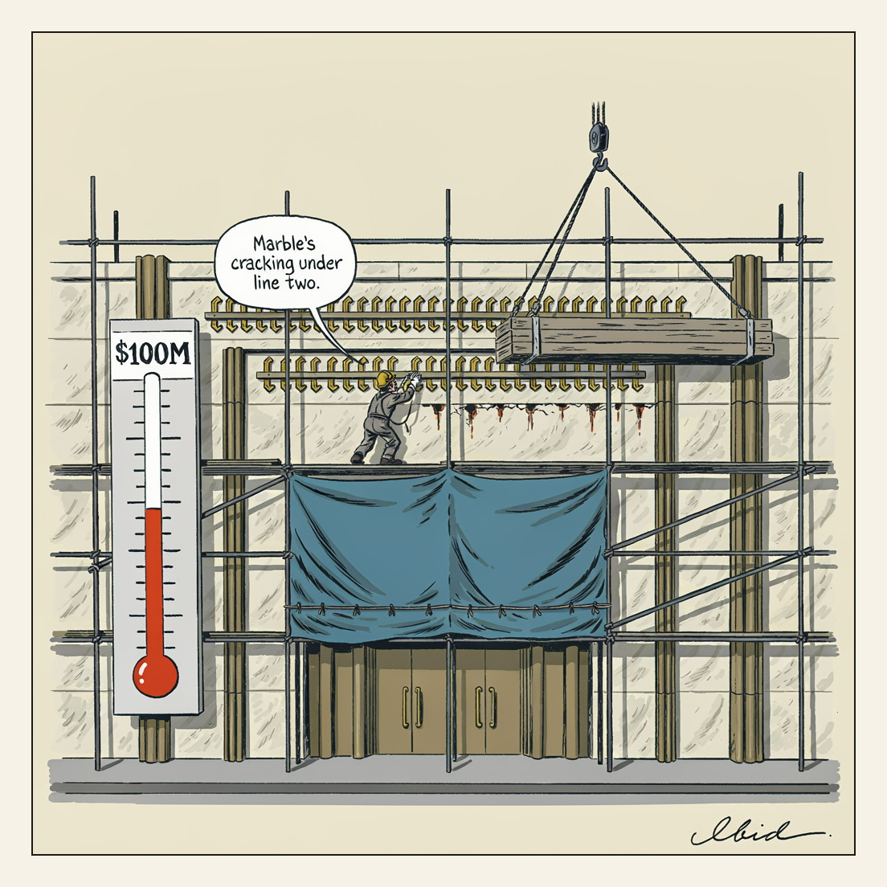

Donors at that level get the plaza too.
Stretch Goal

In an Aug. 18 status report, the Kennedy Center's board told a federal judge it will not try to reattach President Trump's name to the building's facade before Sept. 8. The proposed signage would read "The John F. Kennedy Memorial Center for the Performing Arts, Restored and Renovated by President Donald J. Trump," with a third line crediting the "Trump Kennedy Center Fund" added only if that fund reaches $100 million in donations; the board also wants the grounds renamed "President Donald J. Trump Plaza." Rep. Joyce Beatty, who sued, argues the scaffolding tarp over the entrance exists to frustrate a court order that the building honor Kennedy exclusively, and that bolting the new letters may already have damaged the historic marble.